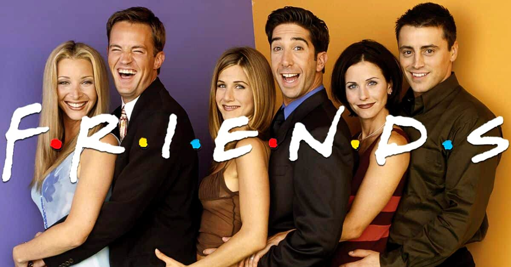
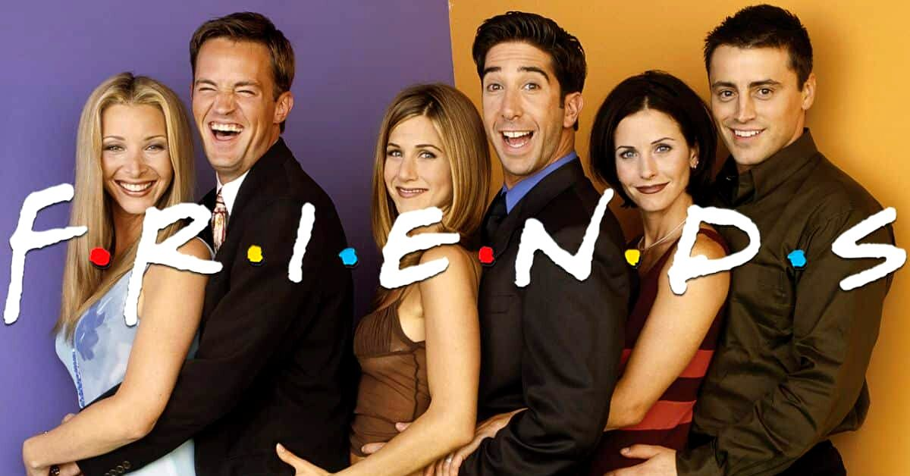

A cada fase da vida haverá uma nova versão de você. Não tenha medo de mudar.
Quem sou eu:
Alegre, dedicada, criativa e responsável.
Tenho 32 anos, sou formada em História pela UNIFESP desde 2018. Atuo como docente em uma Organização
Social há cinco anos, vinculada ao projeto CEDESP
de assistência social da prefeitura paulista.
Atualmente, decidi iniciar uma nova carreira e fazer a transição profissional tão almejada desde a
adolescência para a área da computação. Desta forma, curso o 1º semestre de Desenvolvimento de
Software Multiplataforma pela FATEC-Zona Leste. Sinto-me ansiosa, empolgada, desafiada e há muito que
não me sentia assim, esperançosa.
Habilidades:
- Racional;
- Organizada;
- Flexível;
- Gerenciamento de tarefas;
- Comunicação assertiva;
- Criatividade;
- Inteligência emocional;
Estudos
Formada em História pela UNIFESP (2018).
Técnica em Museologia pela ETEC Parque da Juventude (2020).
Pós-graduada em Psicopedagogia pela Descomplica (2022).
Iniciei em 2024 o curso de Desenvolvimento de Software Multiplataforma (DSM) pela FATEC-Zona Leste,
onde tenho aprendido sobre as seguintes linguagens e softwares, ainda em nível básico:


Projetos
Atualmente foram desenvolvidos para a disciplina de Desenvolvimento Web os seguintes trabalhos:
E como projeto pessoal e outro para uma querida amiga, estão em desenvolvimento as páginas:


É através da persistência e dos estudos, ao colocar na prática o que estou aprendendo, que pretendo alcançar a excelência no desenvolvimento de páginas web. São apenas o começo!
Curiosidades Geek
Uma típica criança dos anos 90
Criativa, curiosa, inquieta.
- Cresci assistindo Castelo Rá-Tim-Bum, Mundo da Lua e O Mundo de Beakman, dançava desde Xuxa, Sandy e Jr., Mamonas Assassínas, até Beatles e Bonnie Tyler, apresentados pelos meus pais, respectivamente. Aprendi a ouvir músicas do pop ao rock - Whitney Houston, Madonna, Michael Jackson,Cazuza, Raul Seixas, Legião Urbana, The Police, U2, Queen, Pink Floyd, Bon Jovi,Aerosmith, AC/DC entre outros. Ouvi e fui de forró, samba, samba-rock, rap até me apaixonar por "Cannon in D" de Pachelbel e "Four Seasons" de Vivaldi.
Atualmente, após a leitura da duologia Jogador Número Um de Ernest Cline (2011), tenho me dedicado a absorver ao máximo a cultura dos "mágicos" anos 80, tanto em jogos, filmes, seriados, músicas e livros. Amor à primeira vista, leitura.
Abaixo um modesto "álbum" com alguns conteúdos que costumo acompanhar:
 
